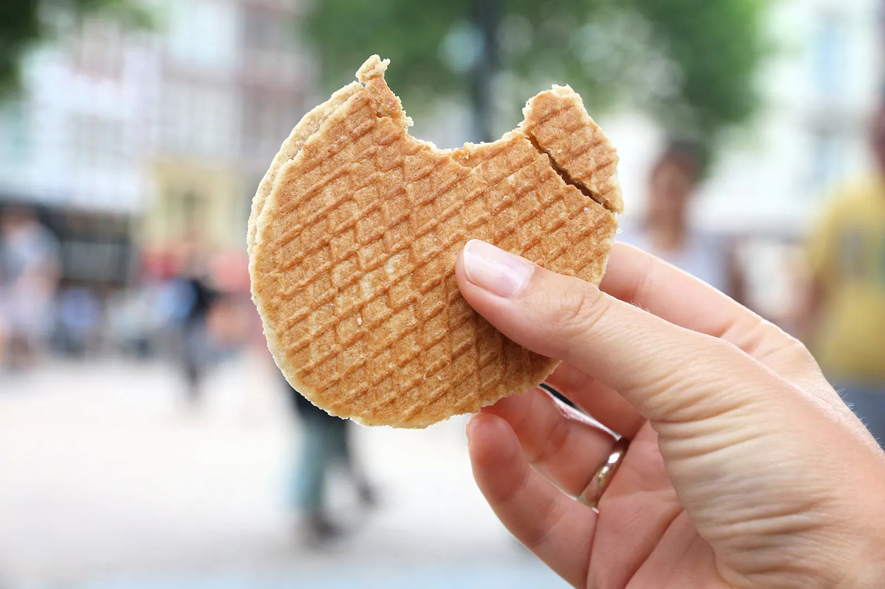
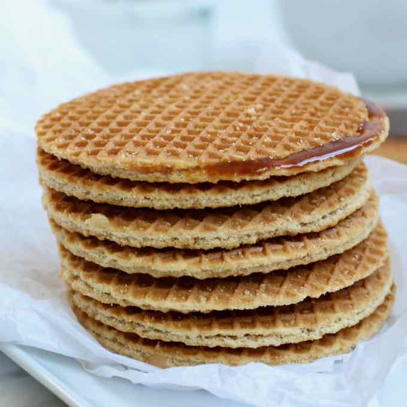
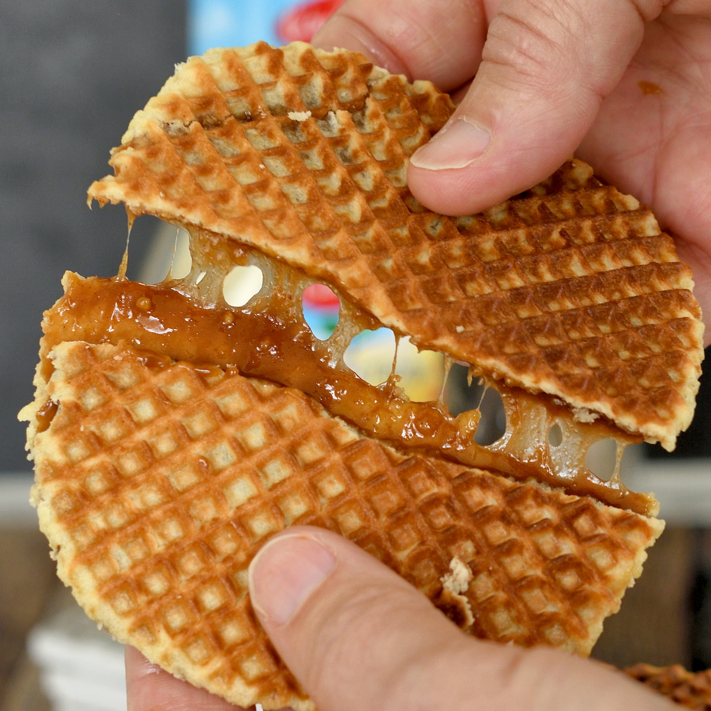
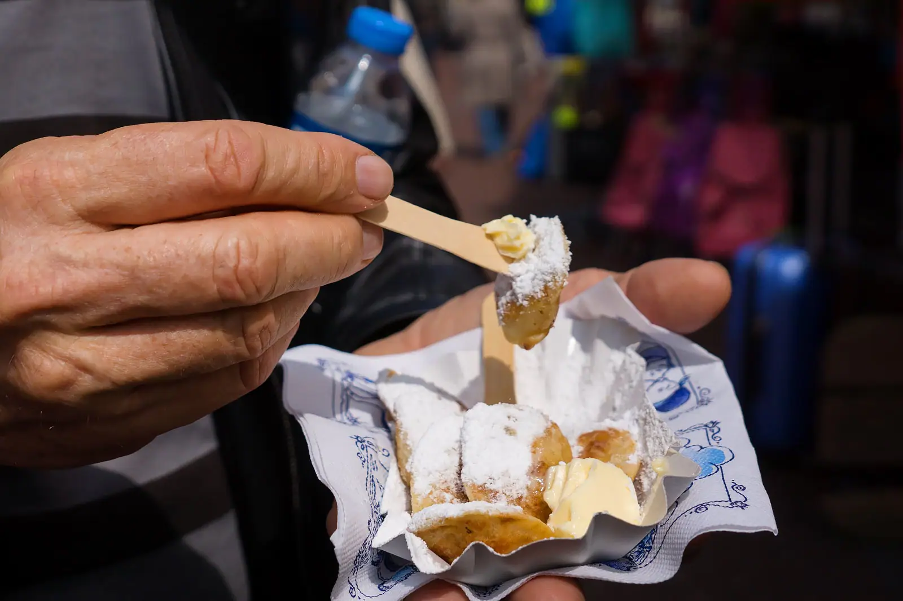
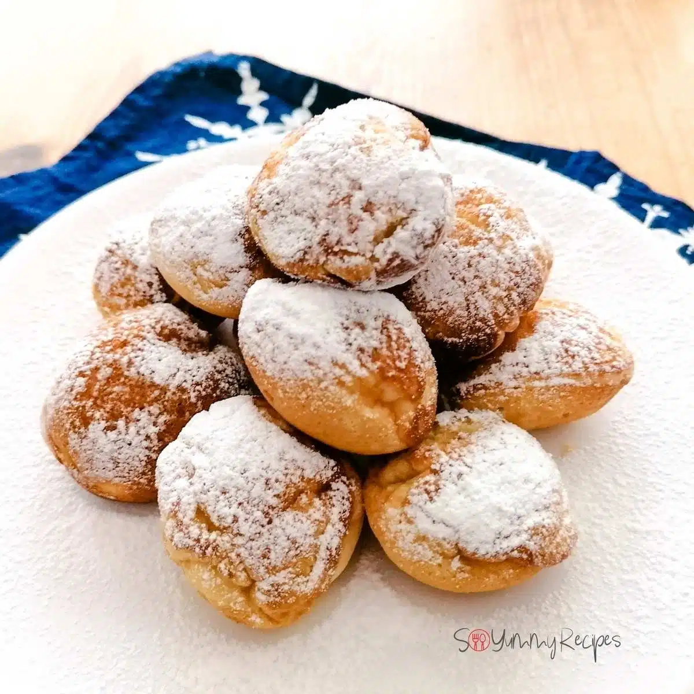
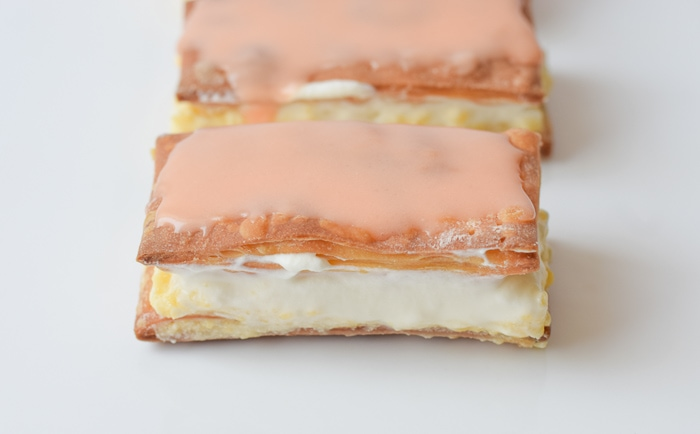
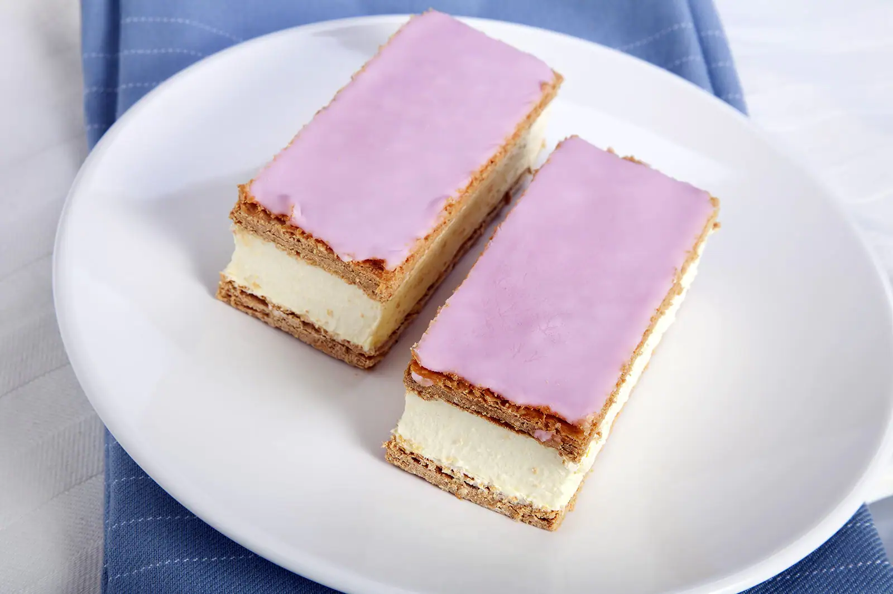

1 - Galletas stroopwafel
Se trata de una galleta de dos capas muy finas con sirope en medio. Este caramelo puede variar, pero en la receta tradicional se usa azúcar moreno, mantequilla y canela.



2 - Poffertjes
Pequeñas tortitas esponjosas.


3 - Tompouce
Un delicioso pastel relleno de crema.

